Residual Attention Network - 2017
- 여길봐 여길! 👋 Feature 생성에 도움을 주는 Attention!
- Residual과 만난 Attention, Residual Attention Network Review.
Hi, Attention.
- 2015년은 명실공히 ResNet의 해였습니다. 그만큼 영향력이 상당해서 GoogleNet의 후속인 Inception 시리즈 마지막이 ResNet으로 장식될 정도였죠.😬 오늘 리뷰 할 Residual Attention Network의 이름에서 유추할 수 있듯이, 논문이 나온 2017년 경에 ResNet만큼 핫한 키워드가 또 이
Attention이었습니다. - 특히 자연어처리 분야에서 Seq2Seq의 한계를 돌파하게 해준 개념인만큼 Attention이라는 개념은 주목을 많이 받았습니다. 같은 해인 2017년에 이 논문 뒤로 구글에서 나온 그 유명한
Attention is all you need에서는 Seq2Seq의 인코더와 디코더를 전통적인 RNN 계열 셀 없이 Only Attention으로만 이룬 Transformer를 만들어 자연어처리 분야의 발전을 이끌기도 했죠.
Attention은 특정 알고리즘이 아닙니다.
- 하지만, 지금 소개 할 Residual ‘Attention’ Network에서의 ‘Attention’은 자연어처리에서 그 Attention 알고리즘이 전혀 아니고, 개념적인 차원에서 ‘좀 더 참고 할 만한 양질의 Feature를 제공해준다.’ 점에서 그 궤를 같이 할 뿐입니다.
- 그래서 이번 포스팅
2. Related Work부분에서 나올 다양한 Attention 기법들도, 각자가 ‘어떤 방식으로 네트워크가 좀 더 집중할 부분에 대해 힌트를 줄 수 있을까.’라는 같은 질문에 대한 대답일 뿐 알고리즘은 각자 다양합니다.
1. Introduction
- Residual Attention을 CNN Classification 모델에 적용을 하면, 아래와 같은 효과가 있습니다!
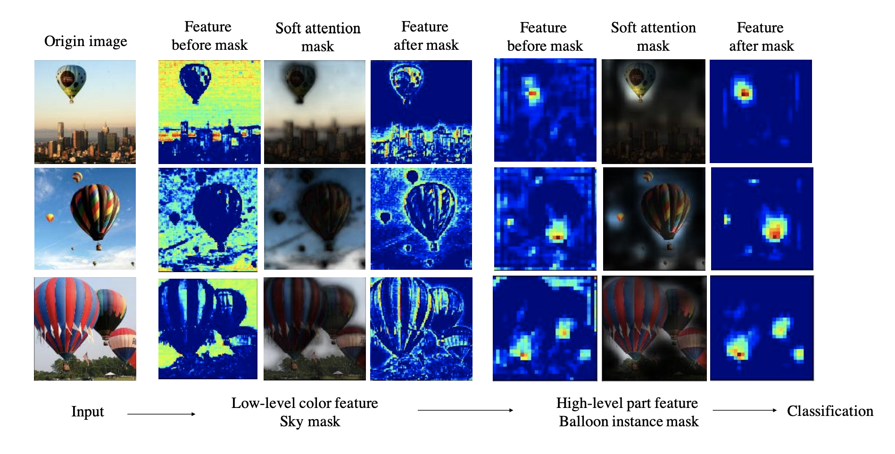
different corresponding attention masks in our network.
- 인풋이 들어오고 난 뒤, low-level에서는 전반적으로 넓은 영역에 대한 Feature인 하늘을 좀 더 강조하는 Attention 의 효과가, 그리고 모델의 high-level feature로 갈 수록 좀 더 구체적인 부분에 대한 Feature에 대해 Attention을 준다는 것을 확인 할 수 있습니다.
- 이렇게 저차원에서 고차원 Feature가면서 서로 다른 부분에 Attention을 주는 것이 가능합니다. 그것을 가능하게 해주는 원인이 바로, ‘Residual’ 이라는 개념 때문입니다. 아래와 같이 말이죠.
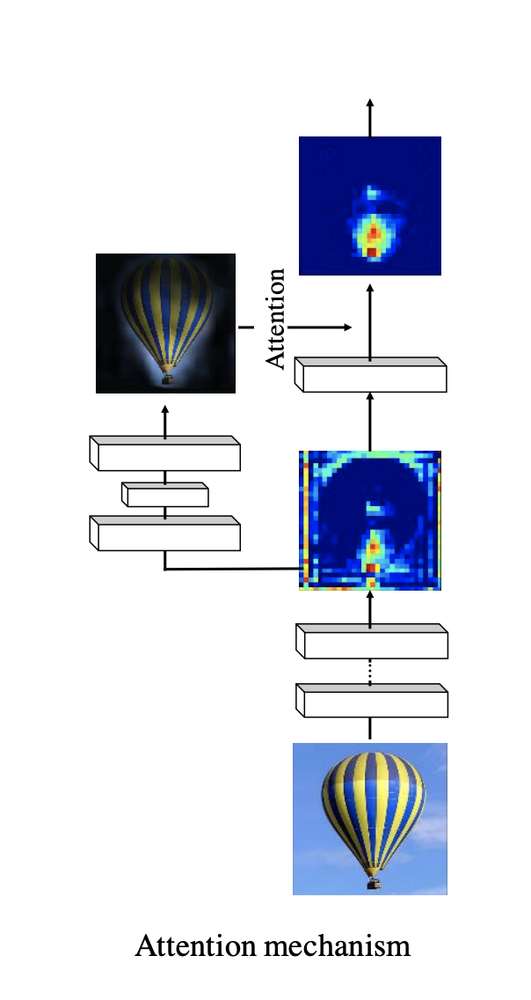
- 어디서 많이 본 모양이지 않습니까? 네, ResNet의 그 Residual 맞습니다. 그래서, Residual Attention Network에서 말하는 이 Attention Module은 ResNet에서도 Residual을 뗐다, 붙였다 할 수 있었던 것 처럼 탈부착(?)이 가능합니다.
- 그래서, 결론적으로 Residual Attention Network는 여러개의 Attention Module로 이루어져 있고, 이 Attention Module은 각자가 각자의 위치에서 서로 다른 Attention Feature를 학습한다고 볼 수 있습니다. 그래서 첫 번째 사진과 같은 효과를 가질 수 있습니다. 👍
- 그리고, 이 Attention Module은 단독으로 쓰이면 성능이 오히려 더 떨어지기 때문에, SOTA 모델들에 붙여서 쓰는 것이, 특히 모델의 깊으면 깊을수록! 더 효과가 좋다고합니다.
- 그리고, Bottom-up top-down feedforward attention이라는 개념에 대해서도 introduction에서 언급을 하는데, 이 부분은
2. Related Work,3. Residual Attention Network를 통해 천천히 설명하도록 하겠습니다.
2. Related Work
- 본 논문에서 소개하게 될 가장 핵심인, Soft attention의 구조는 당시에 많은 발전을 이룬 Segmentation - FCN, DevonvNet, SegNet - 기법과, Pose estimation - hourglass network - 기법에 영감을 받았다고 밝히고 있습니다.
2.1. Spatial transformer networks
- 그러면서 당시 최근 동향으로 나온 논문들을 소개하는데요, 먼저 아래와 같이 Affine Transformer를 학습하여, 위치를 바로 잡아주는 Spatial transformer networks 입니다.
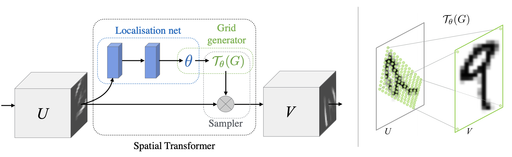
- 간단히 설명하자면, 보시는 바와 같이 위치 정보에 Spatial한 부분에서 Transform을 해 줘야할 것 같으면 수정한 뒤에 그 정보를 추가해주는 Attention을 준다고 해석할 수 있겠네요.
- 본 포스팅에서는 이 Spatial Transformer에 대해 더 깊이 설명하지 않겠습니다. 이 Affine Transformer가 어떻게 학습이 가능한지 궁금하신 분들은 Jamie Kang님의 블로그를 참고해주시면 되겠습니다.
2.2. Attention to Scale: Scale-aware Semantic Image Segmentation
- 그리고 두 번째로 소개하는 논문은, 당시 Segmentation에서 SOTA 성능을 낸, Attention to Scale: Scale-aware Semantic Image Segmentation 입니다.
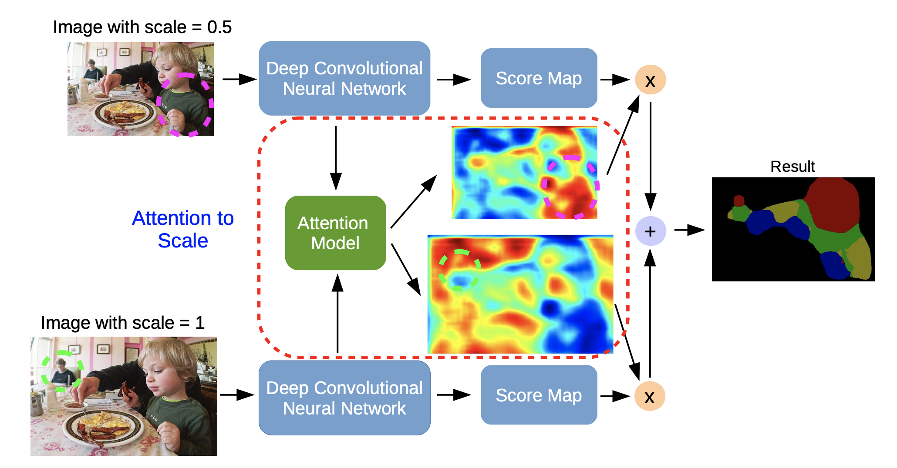
- 간단히 설명하면, 서로 다른 스케일의 이미지 인풋에 대해 FCN(논문에서는 DeepLab)을 학습하고 그 Output을 Attention Model에 입력합니다. Attention Model은 최종적으로 들어온 다양한 스케일의 Output Score Map에 대해 bilinear interpolation(Upsampling)을 하여 스케일을 다 같게 맞춰준 후에, Softmax를 통해 가중치를 설정하고 Wegiht Map을 Output으로 내어놓는 식으로 작동합니다.
- 그래서, Attention model은 서로 다른 스케일과 포지션에 있는 feature들에 대해 얼마나 집중해야하는지를 학습하게 됩니다. 그리고 들어온 각자 다른 스케일에 맞게 그 Weight Mapt을 다시 맞춰서 나눠주고 또 각각의 FCN이 학습할 때, Soft Attention으로 참고할 수 있게 해줍니다. 😉
2.3. Bottom-up top-down feedforward attention
- 그래서, 논문에서 말하는 Bottom-up top-down feedforward attention에서 Bottom-up이란, Segmentation 쪽에서 Feature Map size를 다시 키울 때 사용하는 Up sampling을 뜻합니다. 반대로, top-down은 pooling이나 stride conv 등을 통해 이미지 사이즈를 줄이는 것을 뜻하구요.
- 그리고 Bottom-up top-down feedforward attention에서 attention이란, 위의 두 논문처럼, 방식이야 뭐가 됐든, 그저 좀 더 양질의 정보를 통해 각 Backbone이 되는 네트워크를 도와주는 행위 자체를 뜻한다는 것을 다시 한 번 알 수 있습니다. 그래서 작게는 LSTM의 Cell State나, Highway Network, ResNet에서의 모든 것들이 사실상, 작은 Attention들이었다고도 설명할 수 있겠네요. 😎
- 그럼, Bottom-up top-down이 등장하는 Residual Attention Module의 Mask Branch에 대해 아래에서 설명을 이어나가도록 하겠습니다.
3. Residual Attention Network
3.1.Soft Mask Branch
- Attention Module은 아래와 같이 생겼습니다. 그림에 나오는 $p$, $t$, $r$들은 작은 하얀 네모가 뜻하는 Residual unit(ResNet의 Residual block)을 몇 개를 사용하는지에 대한 Hyperparameter일 뿐, 구조를 설명하는데는 상관이 없으니 무시하셔도 좋습니다.
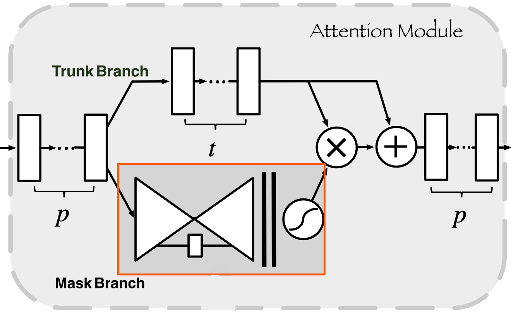
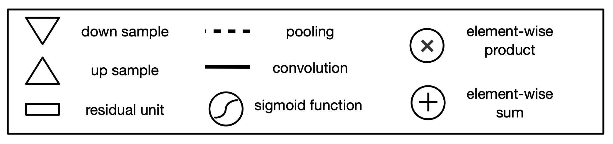
보시는 것처럼 Attention Module은 Trunk Branch와 Mask Branch로 나누어 집니다. Trunk branch가 보통의 CNN Network라고 볼 수 있고, Mask Branch가 핵심적인 Attention의 역할을 하게 되는 부분입니다. 위에서 열심히 설명한 Bottom-up top-down이라는 개념이 Down Sample, Up Sample을 뜻하는 귀여운 삼각형으로 단순화되어 도식화 되어있네요! ☺ 각 Branch의 Receptive field만 비교해보면 아래와 같습니다.
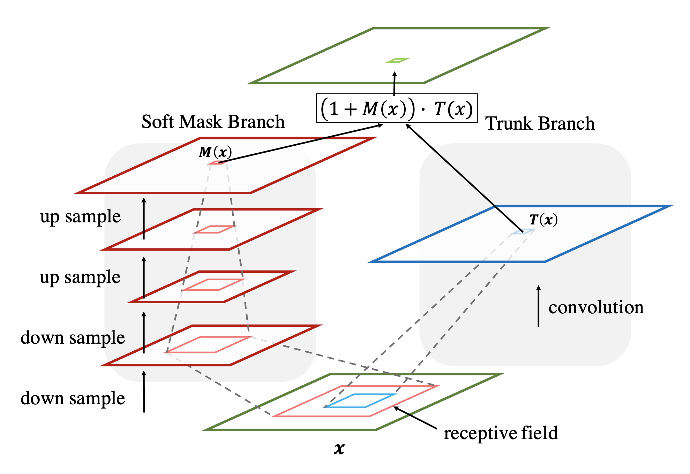
조금 더 구체적으로 Mask Branch를 살펴보면 아래 그림과 같습니다. 여기 나오는 interpolation이, Up sampling을 뜻하는 bilinear interpolation입니다. Trunk branch와 사이즈를 맞춰주기 위해서, Max pooling 개수만큼 interpolation도 들어가 있습니다.
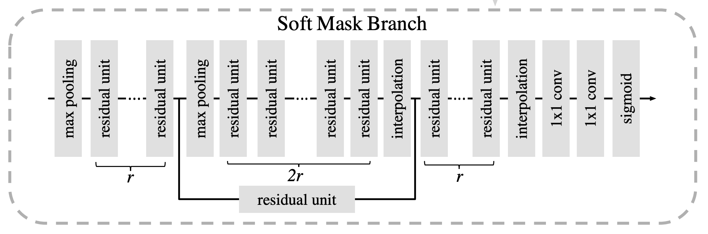
이렇게 Mask Branch는 Down sample, Up sample을 통해서 작동을 하는데요, 아무래도 사이즈가 줄어들었다가 다시 Up sampling이 되었어도 살아남아있는 feature들은 중요한 feature들이겠죠? 그렇기 때문에 얻게 되는 효과들은 아래와 같습니다.
1) 좋은 Feature들을 강화시키는 feature Selector!
2) Trunk feature들에서 noise로 생각할 수 있는 안 좋은 Feature들을 어느 정도 걸러버리는 효과를 통해서 Suppress! 👉 Noise에 강한 Robustness 상승효과!
ImageNet 데이터셋을 위해 고안된 Residual Attention Network의 전체적인 그림은 아래와 같습니다. 실험에서는 $p =1, t=2, r=1$ 으로 설정하였다고 하네요!
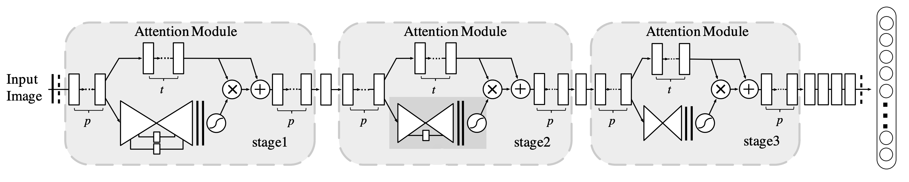
- 모델의 구체적인 Detail은 아래와 같습니다. Attention-56, 92 같은 숫자를 정하는 기준은 Trunk Branch의 Layer 수 입니다. :)
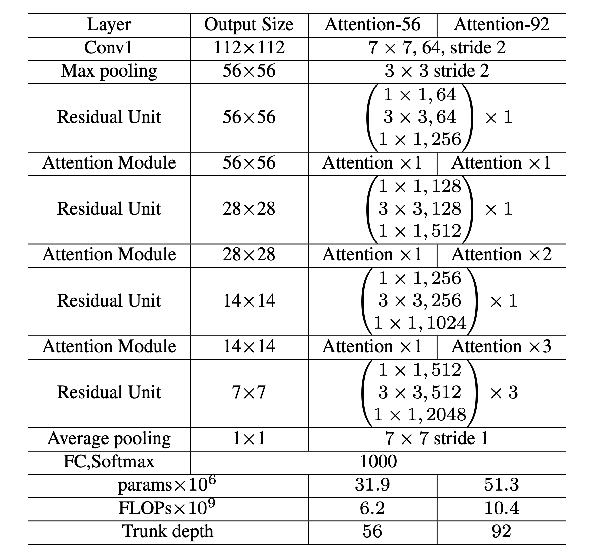
pre-activation Residual
- 참고로 논문에서는, 여기에 나오는 Residual Unit은 ResNet의 Residual Block이 아니라 그 뒤에 좀 더 계량되어서 나온 pre-activation Residual Unit이라고 명시하고 있습니다.
- pre-activation Residual은 2015년 ResNet을 만든 Kaiming He.가 그 뒤인 2016년 3월에 다시, ‘Identity Mappings in Deep Residual Networks’라는 후속 논문으로 제시한 개념인데요. 기존의 Residual Block에서는 마지막에 위치했던 ReLU를 Residual의 가장 첫 부분으로 가져온 Block을 뜻합니다. 기존의 ResNet에서 가장 마지막에 ReLU를 통과시켜버리면, 진정한 의미에서 Residual이 아니라, Identity가 오염되기 때문에 이를 수정한 논문입니다.
- (e)와 같이, ReLU 앞에 BN을 추가하면 full pre-activation이라 칭하고, (d)를 pre-activation이라 합니다. (e)가 (d)보다 성능이 좋습니다.
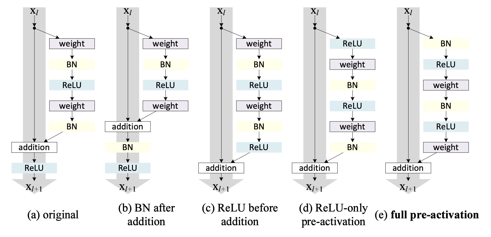
All these units consist of the same components — only the orders are different.
- 추가로 알려드리면 이 pre-activation은 Layer가 200층 이상 깊어질 때, 성능이 더 개선되는 효과가 있습니다. :)
3.2. Spatial Attention and Channel Attention
여기서 끝이 아닙니다! Mask Branch에서 마지막 Sigmoid를 통과하기 전에, 좀 더 다른 normalization step을 activation function에 추가함으로써 다양한 실험을 해보는데요! 바로, Spatial Attention과 Channel Attention입니다.
Mixed: $f_1(x_{i,c}) = \frac{1}{1+ exp(-x_{i,c})}$
Channel: $f_2(x_{i,c}) = \frac{x_{i,c}}{||x_i||}$
Spacial: $f_3(x_{i,c}) = \frac{1}{1 + exp(-(x_{i,c} - \text{mean}_c)/\text{std}_c)}$
여태껏 살펴 본, 그냥 Sigmoid만 통과시킨 버전을 Mixed attention $f_1$. $L2$ Normalization을 통해서 각 위치 정보, spatial information을 없애버리고 Channel에만 집중하게 해주는 Channel Attention을 $f_2$. 모든 위치 좌표 $i$와 모든 channel $c$에 대해 channel간의 정규화를 통해 편차를 없애버리고 Spacial 정보만 남겨 위치 정보에만 집중하게 하는 Spacial attention을 $f_3$로 합니다. 이 세가지 attention에 대해서 CIFAR-10으로 실험을 하였는데요, 결과는 아래와 같이 Mixed Attention이 가장 성능이 좋습니다.
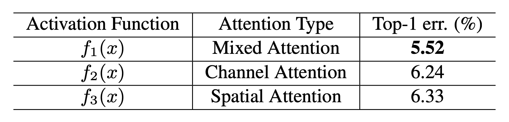
with different activation functions.
저는 개인적으로 이 부분에서, 아무런 변형을 하지 않은 모델이 가장 성능이 좋다면 굳이..? 왜 논문에 이 점을 명시했을까하는 의문이 생겼었는데요.. 😅
논문에서는
2. Related Work에서 나온 Spatial transformer networks은 Spatial Attention만, 그리고 Attention to Scale: Scale-aware Semantic Image Segmentation은 Scale Attention만 한 것이라고 다시 가져와서 설명합니다. 즉, Channel, Spacial Attention으로 해당 논문들의 기법을 상징적으로 본인들의 attention과 비교함으로써, 이 논문에서 말하고 있는 Attention 기법이 Mixed된 좋은 Attention이라는 것을 말하고생색내고싶어서..인것 같습니다.ㅎㅎ
Experiments
- 당시의 SOTA 논문들과 ImageNet으로 비교한 성능 결과입니다. 성능표에서 나타나듯, 기존의 모델에 Attention을 추가하면 성능이 개선되거나 더 작은 parameter로 같은 성능을 낼 수 있는 것을 볼 수 있습니다. 😮 아, 여기 나오는 ResNet-200은 위에서 설명한 pre-activation ResNet입니다.
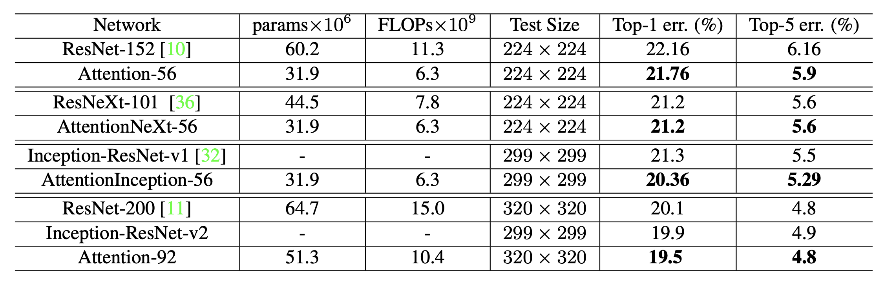
- 여기까지, Residual Attention Network 리뷰를 마치도록 하겠습니다. 읽어주셔서 감사합니다! 🙇